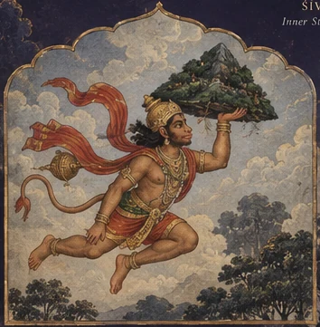
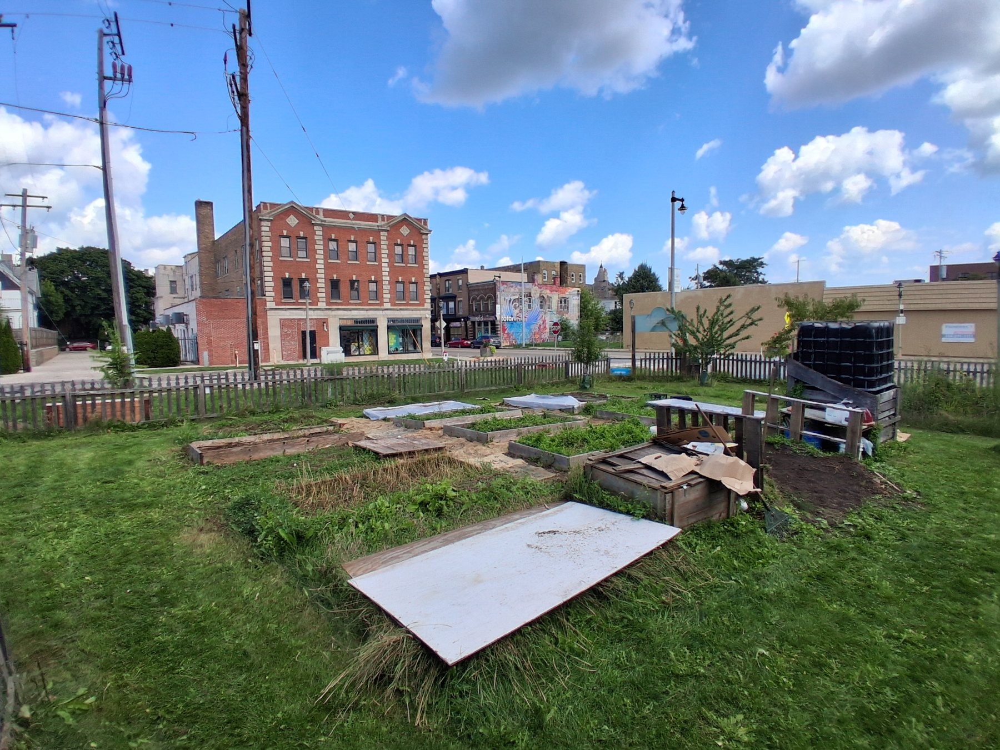
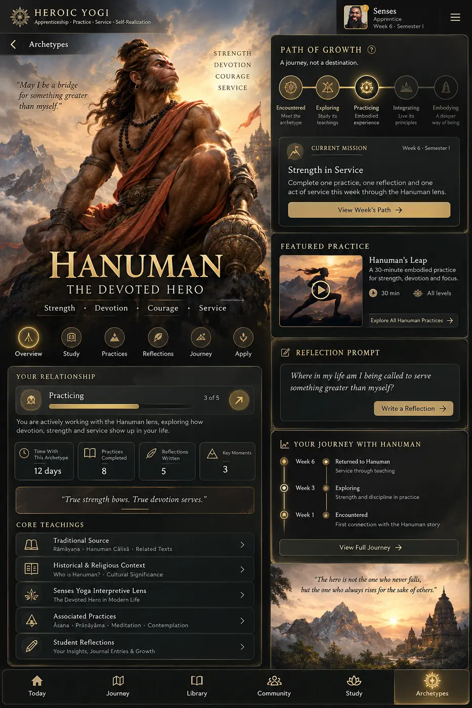

Gaṇeśa
Discernment & Obstacles
The guiding figure of Semester One: wisdom, beginnings, problem-solving, and learning through difficulty.
I bow to God and to the highest Self toward which practice reaches. I bow with gratitude for what I have learned through Jesus; Hanumān; Ādiyogi; Śaṅkara; the Buddha; Lakṣmī; Bhūmi; Vāyu; Indra; Bṛhaspati; Govinda; the archangels; and Rāma and Sītā.
I bow to teachers, traditions, communities, the Earth that carries us, the breath that sustains us, and the life with whom this path is shared.
These figures arise from different traditions and are honored without claiming that their teachings or theologies are identical.
“Placid Ambient” by MusicLFiles · CC BY 4.0. Pause or resume it at any time.
Through practice we refine.
Through study we understand.
Through service we give back.
In unity we remember what truly matters.
Healthy individuals. Healthy communities. Healthy ecosystems.

Contemporary interpretive illustrations for archetypal study. Explore the traditional artworks and source credits below.
Before the apprenticeship, gardens, and Schools of Practice took form, Heroic Yogi documented a daily path of practice, inquiry, and lived transformation. The journal remains an open doorway into the school’s evolving teachings.
 Featured on Patreon · Day 130
Featured on Patreon · Day 130School of Ecology · YAGI Garden at Garden Park · Milwaukee, Wisconsin.
Read the featured journal entry on Patreon → Day 121 · Week 11
Day 121 · Week 11Formation, inheritance, childhood conditions, discernment, and the question of what we consciously carry onward.
Read on Patreon → Day 120
Day 120Rāmāyaṇa, sādhana, memory, paramparā, and leadership as an ongoing responsibility of conscious action.
Read on Patreon → Day 119
Day 119A lived inquiry into Yogaś citta-vṛtti-nirodhaḥ, presence, observation, and the space between thought and action.
Read on Patreon →Yoga For Life, public practice, wellness literacy, accessible movement, breath, meditation, and community education.
YAGI, Garden Park, stewardship, foodways, observation, and place-based learning through relationship with land.
Advanced yoga philosophy, Sanskrit, dreamwork, mythology, contemplative psychology, research, and lifelong scholarship.
Music, sacred sound, contemplative listening, movement, storytelling, visual arts, performance, cultural memory, and creative game development. Nāda Yoga / MOGA and Dream Master are growing pathways within this creative field.
A garden becomes a classroom. A shared meal becomes an opportunity to learn. A public practice becomes a place for neighbors to connect.
Through community gatherings, fieldwork, partnerships, and service, we document the experiences shaping our school.

We believe education should remain accessible, and that the ability to purchase a book should not determine someone's opportunity to learn.
Our library brings together freely available texts, original sources, traditional teachings, and resources developed through the school's practice. We honor authors, translators, and living traditions by identifying sources and supporting further study.
Explore free resources →Enter the library →Shared stewardship · Community is our campus
Senses Yoga School is currently founder-led. Its educational work grows through sustained dedication and meaningful community relationships. We are seeking in-kind administrative expertise, grant development support, sponsorships, and partners to help sustain accessible learning.
We welcome administrative and financial stewardship, grant-readiness assistance, donated professional services, materials, volunteer labor, sponsorships, and partner introductions. Current Garden Park fundraising priorities include a shed and rainwater collection build and installation. Proposed 2027 Phase II Community Improvement Project improvements remain in planning and subject to funding and approvals.
Stronger administrative systems and collaborative capacity can support applications for eligible private and public grants; funding is not guaranteed.
Join a community practice, explore the apprenticeship, help care for a garden, share your knowledge, or introduce us to someone whose work connects with ours. Participation can begin wherever you are.
Community-funded education makes this work possible. Support the school →
Our practice moves between the mat, the books we study, and the people and places teaching us along the way. Come explore the Heroic Yogi path with us.
Winter 2026–2027 · Applications open · Limited to 3 students | Spring 2027 · 6–8 planned places
Explore the apprenticeship →
Strengthen body, breath, attention, and inner steadiness.
Learn through land, foodways, stewardship, and reciprocity.
Build belonging through shared practice, care, and participation.
Grow into responsibility through service, readiness, and relationship.
Senses Yoga School does not separate personal practice from the life around it. A mat can become a laboratory for self-awareness. A garden can become a classroom. A neighborhood can become a place of study, service, and leadership.
Read our educational philosophy →
The school honors the contemplative, philosophical, artistic, and embodied traditions of yoga while asking how their wisdom can be practiced responsibly in the places where people live now.
Study is not presented as decoration or distant history. It is joined to breath, movement, reflection, ecology, relationship, and service.
Enter the Learning PathArchetypes enter the apprenticeship as companions for reflection—not identities students are required to adopt. Each image opens a quality to study through practice, story, relationship, and service.
The guiding figure of Semester One: wisdom, beginnings, problem-solving, and learning through difficulty.

A relational lens for witnessing and movement, consciousness and transformation, rest and responsible action.

A counterbalance to practice becoming only labor: creativity, play, devotion, and participation in life.

The Rāmāyaṇa becomes sustained narrative inquiry into formation, devotion, strength, duty, discernment, and return.
Alongside the seven portrait archetypes, students encounter a wider constellation of sacred, philosophical, elemental, and interfaith guides. Their traditions are honored distinctly rather than blended into one theology.
Traditional artworks are presented as study images with historical context. Gaṇeśa and Rāmāyaṇa images are public-domain works via Wikimedia Commons. Śiva–Pārvatī and Kṛṣṇa images: SpeakingArch, CC BY-SA 4.0, via Wikimedia Commons.
People enter through a public class, workshop, community project, partnership, or apprenticeship. The path is developmental rather than hurried.
Encounter practices, teachings, and questions.
Support a class, program, site, or community.
Reflect, observe, and preserve what is learned.
Care for relationships, systems, and shared work.
Guide with readiness, humility, and responsibility.
Practice is where the path begins. Service is where learning enters relationship.Practice → Learn → Serve → Teach & Lead
Our schedule follows seasons, community partnerships, parks, gardens, public programs, and the capacity of the people caring for them.
Yoga For Life, Heroic Breathwork, community practice, YAGI gatherings, workshops, and seasonal events.
Open the Public Calendar
Neighborhood & Community Organizations
Accessible wellness and educational programming where communities already gather.
Aging & Disability Access
Adaptive, inclusive opportunities shaped around the people being served.
Schools & Youth
Movement, ecology, reflection, creative learning, and leadership pathways.
Parks & Recreation
Seasonal public practice and place-based community education.
Universities
Service learning, internships, workshops, inquiry, and collaboration.
Workplaces & Workforce
Resilience, mobility, recovery, breathwork, and sustainable practice.
The Senses learning journey
Begin with Yoga for Life. Grow through study, apprenticeship, supervised field experience, and Dream Connections. Our goal is capable educators and practitioners who can sustain their own work while contributing to the communities around them.
Enter through accessible community practice and establish a foundation of embodied learning.
Explore this pathway →Use the Library of Consciousness and the school's foundational learning pathways.
Explore this pathway →Develop teaching foundations, reflection, leadership and supervised practice through the school's structured curriculum.
Explore this pathway →Apply learning alongside community educators and site leads in approved, supervised settings.
Explore this pathway →Develop relationships with mentors, professional educators, field experts and community collaborators; matching depends on availability and mutual agreement.
Explore this pathway →Develop the teaching, operational, ethical and professional capabilities to sustain your own work and contribute back to community.
Explore this pathway →The pathway describes the school's educational model, not guaranteed admission, mentor matching, placement, employment, certification or professional income. Current offerings are confirmed individually.